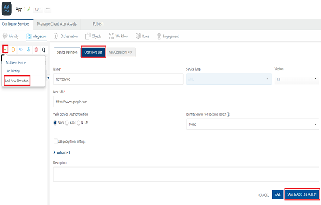
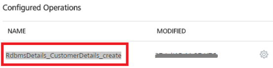
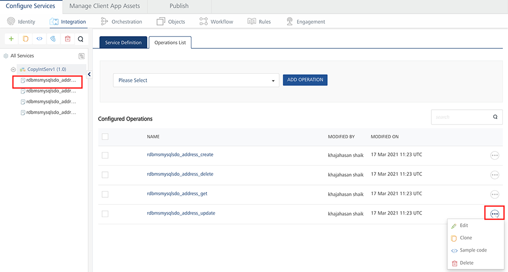
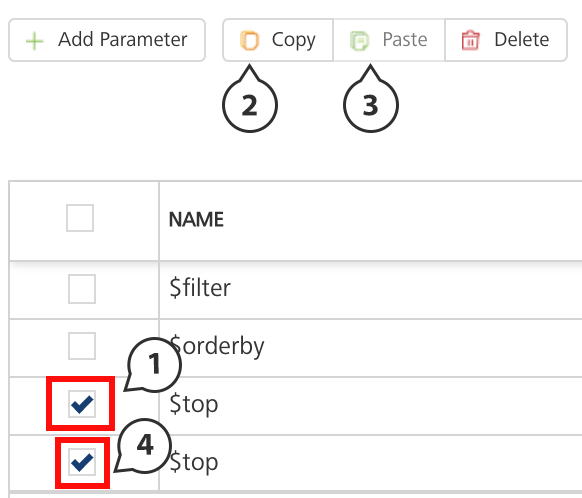
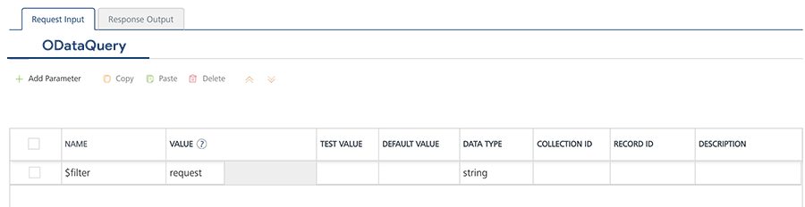
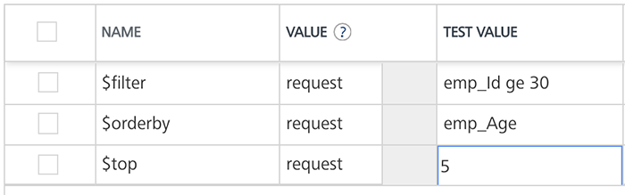
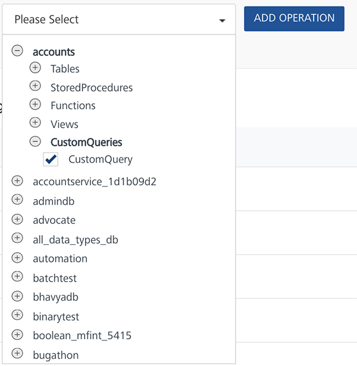
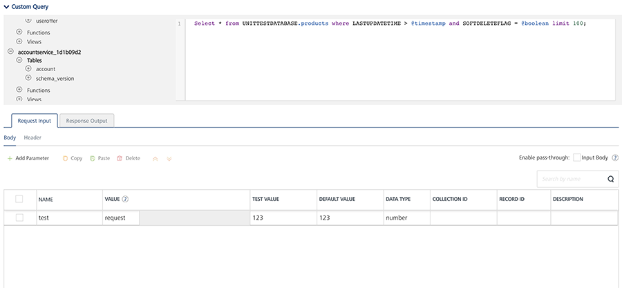
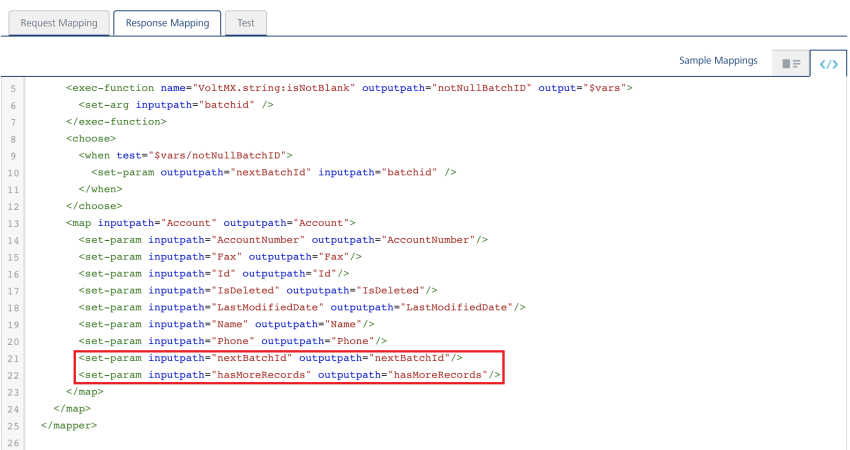

Database Adapter
Relational Database Adapter
With Volt MX Foundry database adapter, you can connect to your own database as an endpoint. After you configure the database adapter in Volt MX Foundry Console, you can perform create, read, update, and delete (CRUD and Binary CRUD) operations on data in the tables and invoke stored procedures, functions, and views.
For example, banks maintain a store of users and their details. With Volt MX Foundry database adapter, banks can connect to their own databases and manage customers data.
Advantages of Volt MX Foundry Database adapter
Following are the advantages of using Volt MX Foundry Database Adapter:
- Admins can connect to the given database.
- Admins can manage the databases using CRUD operations.
- When an admin is creating CRUD operations, the admin can access the configured schema.
- Data types: All major data types are supported.
-
Binary Support is available in Database Adapter with Range header.
-
Volt MX supports eight ODATA parameters for the read operation such as
$filter, $orderby, $top, $skip,$select,$expand,$batchsize, and$batchid.Note: From V8 SP4 FP2 onwards, Volt MX supports $batchsize and $batchid for MySQL database.
Note: You must provide the required batch size to the $batchsize parameter.
Note: If you set $batchsize in the first batch call, the response of the batch generates details for the nextBatchId and hasMoreRecords. If the hasMoreRecords is set to true in the response, for the second batch call onwards, you must specify the $batchid with the value of nextBatchId. It indicates that there are more records to be downloaded in the next batch.
-
Volt MX supports ODATA parameter
$filterfor the Delete operation. -
Volt MX supports ODATA Methods: substringof and indexof. For more information, refer to Support for ODATA Methods (substringof and indexof).
- You can execute custom SQL queries if you want to operate on multiple tables through single operation like Joins.
Create a Database Adapter
Creating a database adapter involves the following steps:
-
How to Configure a Service Definition for a Database Service
- How to Configure CRUD Operations for a Database Service
Configure Database End-point Adapter
To configure the Database Adapter in the Integration service definition tab, follow these steps:
- In the Name field, provide a unique name for your service.
-
From the Service Type list, select Database.
If you select Database, the Database Type, Database Connection URL,and other details are displayed.
Note: XML is selected, by default.
-
Provide the following details in the Connection Parameters section to create a Database Adapter.

Field Name Description Database Type the database driver class details manually in the box or select the database type from the database list. If you select the database type from the database list, the driver class details of the selected database will be filled automatically in the field.
The database driver class for each database type is as follows:
MySQL: com.mysql.jdbc.Driver
PostgreSQL: org.postgresql.Driver
SQL Server: com.microsoft.sqlserver.jdbc.SQLServerDriver
Oracle: oracle.jdbc.OracleDriverDatabase Connection URL Type the connection URL in the format given in the help text. The help text in the box changes based on the selected database driver class. You can also copy and paste the connection URL format by clicking the help icon at Database Connection URL, and make the required changes to format. The format of the connection URL is jdbc:<type of Database>://<ip_address>:<port>
The connection URL of the supported database types are as follows:Oracle:
jdbc:oracle:thin:@10.10.1.192:8081:sid
MySQL:jdbc:mysql://10.10.1.192:8081
SQL Server:jdbc:sqlserver://10.10.1.190:8081PostgreSQL:jdbc:postgresql://10.10.1.192:8081User ID Type the user ID for the connection URL. Password Type the password for the user ID which you have entered. Advanced Settings Specify the advanced settings like Soft Delete Flag and Autogenerated fields.
{'softdeleteflag':'', 'softdeleteactivevalue': , 'softdeleteinactivevalue': , 'AutogeneratedFields': {'TableName': ['Field1Name','field2Name'...] } {"issoftdeletedefault ": "false","lastupdatetimestamp": " "}
Note: When the lastupdatetimestamp is set, the RDBMS adapter identifies this column as the ChangeTracking Column to track delta/updated records. All the objects in the given Object Service must have the same ChangeTracking column name.To soft delete a record - 'softdeleteflag':'.
Note: To soft delete a column mention the softdelete column name. Ensure all the tables have the same softdelete column name.Specify the active/inactive values for softdelete column by setting -. {'softdeleteactivevalue':, 'softdeleteinactivevalue': }To specify the autogenerated fields - ''AutogeneratedFields': {'TableName': ['Field1Name','field2Name'...] }}
To turn off the default behavior of soft delete set -{"issoftdeletedefault ": "false"}.Max Pool Size Specify maximum number of connections in the connection pool. Connection Timeout (ms) Type the connection timeout in milliseconds. -
Click Test Connections if you want to check the database connection. If the entered details are correct, the system displays the following message: Valid Database connection details.
-
If your database is configured with a proxy server, you must select an environmentand then click Test Connection to test the database connectivity. The environment should be
=> V8.3.
For example, you have the Volt MX Foundry Console installed on one machine, and the Runtime and Database servers installed on another machine. When you create an integration service of type Relational Database, the Console must be established with a VPN connection to the RDBMS server. So that, when you test the Database connection, the test case will be successful. You can do this by selecting the correct environment for your Runtime Server which will ensure a VPN connection between the Console and the Runtime Server and test the database.
If the entered details are correct, the system displays the following message: Valid Database connection details. -
For additional configuration of your service definition, provide the following details in the Advanced section.
Field Description Custom Code To specify a JAR associated to the service, select one from the Select Existing JAR drop-down menu or click Upload New to add a new JAR file. Make sure that you upload a custom JAR file that is built on the same JDK version used for installing Volt MX Foundry Integration. API Throttling If you want to use API throttling in Volt MX Foundry Console, to limit the number of request calls within a minute. do the following: In the Total Rate Limit text box, enter a required value. This will limit the total number of requests processed by this API.In the Rate Limit Per IP field, enter a required value. With this value, you can limit the number of IP address requests configured in your Volt MX Foundry console in terms of Per IP Rate Limit. To override throttling from Volt MX Foundry App Services Console, refer to Override API Throttling Configuration. Note: All options in the Advanced section are optional.
-
Enter the Description for the service.
- Click SAVE to save your service definition.
Create CRUD Operations for Database Adapter
The Operations List tab appears only after the service definition is saved.
Note: Click Operations List tab > Configure Operation. The Configured Operations list appears.
-
To create an operation, follow these steps:
-
Click SAVE & ADD OPERATION in your service definition page to save your service definition and display the NewOperation tab for adding operations.
OR
Click Add Operation to add a new operation or from the tree in the left pane, click Add > Add New Operation.
Click to View image

Note: To use an existing integration service, refer to How to Use an Existing Integration Service.
-
Provide the following details to configure an operation.
Field Description Schema Select the schema loaded based on your database configuration. Object Type
Table - Select available tables from the
Objectlist, and select CRUD operations for the tables.
View - Select available views from the Object list and, select CRUD operations for the tables.
Stored Procedures - Select available stored procedures from the Object list.> Note: While adding operations to a database integration service, Volt MX Foundry allows you to select CRUD operations only for table and view object types.Object Select the checkboxes for the selected object type. You can select one or more objects. Operations From the operations list, select the required check boxes for CRUD operations for tables. For views, only GET is supported. You can select one or more CRUD operations. -
Click Add Operation. The new operations are created under Configured Operations section.
Operation names are auto-generated in the format. The default name format of a database operation is
<schema_name>_<table_name>_<operations>. You can change the operation name if required.
For example,RdbmsDetails_CustomerDetails_create.
When an admin creates CRUD operations for a database adapter, the admin is under a particular schema. To customize fields, refer to How to Configure CRUD Operations for Database Service.
Configure CRUD Operations for a Database Adapter
After you create an Database service, configure CRUD operations as following:
- Create a Database Record with Create Operation
- Query a Database and Display Information with Read Operation
- Update a Database Record with Update Operation
- Delete a Database Record with Delete Operation
- Create SQL Custom Query
Create a Database Record with Create Operation
Under Configured Operations list, hover your cursor over the create operation and click Settings (the three dots) >> Edit.
Note: To edit an operation, you can also click the operation from the service tree pane.

The system displays the selected operation in the edit mode. You can perform following actions in this window:
- You can add an entry by clicking Add Parameter, if entries for the input and the output tabs do not exist.
-
To make duplicate entries, select the check box for the entry, click Copy, and then click Paste.

-
To delete an entry, select the check box for an entry, and click Delete.
-
Enter the following fields to create a database record.
Fields Description Name The Name field is pre-populated with fields names of the selected database. You can edit this field. Operation Security Level It specifies how a client must authenticate to invoke this operation.
Authenticated App User – It restricts the access to clients who have successfully authenticated using an Identity Service associated with the app.
Anonymous App User – It allows the access from trusted clients that have the required App Key and App Secret. Authentication through an Identity Service is not required.
Public – It allows any client to invoke this operation without any authentication. This setting does not provide any security to invoke this operation and you should avoid this authentication type if possible.
Private - It blocks the access to this operation from any external client. It allows invocation either from an Orchestration/Object Service, or from the custom code in the same run-time environment.
Note: The field is set to Authenticated App User, by default.Action The field is pre-populated with operation names of the selected database. You cannot edit this field. -
For additional configuration of request (or) response operations, provide the following details in the Advanced section.
Custom Code Invocation You can add pre and post processing logic to services to modify the request inputs. When you test, the services details of various stages in the service execution are presented to you for better debugging. All options in the Advanced section are optional. For more details, refer to Preprocessor and Postprocessor. Additional Configuration Properties Additional Configuration Properties allows you to configure service call time out cache response. For information on different types of configuration properties, refer Properties. Front-end API Front-end API allows you map your endpoint (or) backend URL of an operation to a front-end URL. For detailed information, refer Custom Front-end URL. Server Events Using Server Events you can configure this service to trigger or process server side events. For detailed information, refer Server Events.
Note: All options in the Advanced section for operations are optional.
Configure Request Operation for Database Adapter
Integration services accept only form-url-encoded inputs for all input parameters provided in service input parameters (request input).
-
To configure the parameters, do the following:
Field Description TEST VALUE Enter a value. A test value is used for testing the service. DEFAULT VALUE Enter the value, if required. The default value will be used if the test value is empty. SCOPE Select request or session. This field is set to Request, by default. DATA TYPE The default datatype for the selected column is loaded under DATATYPE field. Encode Select the checkbox to enable an input parameter to be encoded. For example, the name New York Times would be encoded as New_York_Times when the encoding is set to True. The encoding must also adhere the HTML URL encoding standards. Description Enter the description for request input. -
To validate the details, click Fetch Response. For more information, refer Test a Service Operation. The result of the operation appears.
-
Click SAVE OPERATION to save the changes in the create operation.
Note: You can view the service in the Data Panel feature of Volt MX Iris. By using the Data Panel, you can link back-end data services to your application UI elements seamlessly with low-code to no code. For more information on Data Panel, click here.
How to Query a Database and Display Information with the Read Operation
-
Under Configured Operations, hover your cursor over the Read operation, click Settings>> Edit.
The system displays the selected operation in the edit mode. The Read operation has the Request Input and Response Output tabs.
Note: You can add an entry by clicking the Add Parameter button if entries for the input and the output tabs do not exist.
In the read operation, the Name drop-down list contains a Select option that acts as a label for the list. Select itself is not a command.

- To make duplicate entries, select the check box for the entry, click Copy, and then click Paste.
- To delete an entry, select the check box for an entry, and then click the Delete button.
-
In the Request Input, configure the following ODATA commands to filter the data:

- The NAME field in the Request Input is prepopulated with ODATA commands.
- In the TEST VALUE filed, enter the query parameter for the selected ODATA command.
For example (sample employee table), shown below:
Command Name Test value for the command Result $filter emp_Id ge 30 Filters and displays data in the table based on age of employes who are older than 30. $orderby emp_Age Arranges data in the table based on employees' age. $top 5 Displays top five records in the table. $skip 5 Displays all records in the table except top five records. For example (sample configuration for ODATA commands), shown below:

- In the DEFAULT VALUE, enter the value if required.
- In the DESCRIPTION, provide the description.
- To validate the details, click Fetch Response. For more information, refer Test a Service Operation. The result of the operation appears.
- Click SAVE OPERATION to save the changes in the read operation.
- In the Response Output tab, configure the fields of the table for displaying the data.

-
To configure the Response Output operation, provide the following details.
Field Description Name The Name field in the Response Output tab is pre-populated with database columns
Scope Select request or session. This field is set to Request, by default.
Note: If you define parameters inside a record as the session, the session scope will not get reflected for the parameters.
DATA TYPE The default datatype for the selected column is loaded under DATATYPE field.
Note: The foundry response will return it as string when the data type is number.
Description Enter the description for response output.
-
To validate the details, click Test. For more information, refer Test a Service Operation. The result of the operation appears.
-
Click SAVE OPERATION to save the changes in the read operation.
Note: You can view the service in the Data Panel feature of Volt MX Iris. By using the Data Panel, you can link back-end data services to your application UI elements seamlessly with low-code to no code. For more information on Data Panel, click here.
How to Update a Database Record with Update Operation
-
Under Configured Operations, hover your cursor over the Update operation, click the Settings button, and then click Edit.
The system displays the selected operation in the edit mode. The update operation has the Request Input tab.
-
The NAME field contains primary key of the table. You cannot modify these details.
The Name column is prepopulated with fields names in the database.
Note: You can add an entry by clicking the Add Parameter button if entries for the input and the output tabs do not exist.
- To make duplicate entries, select the check box for the entry, click Copy, and then click Paste.
- To delete an entry, select the check box for an entry, and then click the Delete button.
-
Update the values in the fields, such as TEST VALUE, DEFAULT VALUE, and SCOPE, if required.
To validate the details, click Fetch Response. The result of the operation appears.
-
Click SAVE OPERATION to save the changes in the update operation.
How to Delete a Database Record with Delete Operation
-
Under Configured Operations, hover your cursor over the Delete operation, click the Settings button, and then click Edit.
The system displays the selected operation in the edit mode. The delete operation has the Request Input tab.
-
Under Configured Operations, hover your cursor over the Delete operation, click the Settings button, and then click Edit.
The system displays the selected operation in the edit mode. The delete operation has the Request Input tab.
-
The NAME field contains the primary key of the table. You cannot modify these details. The Request Input tab contains only the primary key of the table.
-
In the TEST VALUE field, enter the valid primary key value.
-
Click Fetch Response to validate the details. If the test value matches the primary key in the database, the system deletes the record from the database.
-
Click SAVE OPERATION to save the changes in the delete operation.
-
Create SQL Custom Query
If you want to write your own SQL query in the operation, do the following:
- From the schema list, expand the required schema > CustomQueries.
 - Click Add Operation. A new operation named
_CustomQuery is created by default and will be added to the operations list.
Perform the following steps to write a custom query:
Note: Currently only MySql, SQL Server, Oracle and PostgreSQL are supported.
- From the operations list, click
_CustomQuery. _CustomQuery is a default name given to the custom query operation, and it is advised to rename the operation name immediately after you create it. Expand the operation. - Provide the details in the Operation tab as mentioned earlier.
- To write the custom query, expand the Custom Query section. This section contains the read only list of tables and field names in the left pane, and a SQL statement box in the right pane.
 -
In the right pane, write the required SQL query.
-
To include any input parameters in statement, mark them with @. For example, @inputparam1. Here is the sample code for it.
{ Select * from VOLTMXUNITTESTDATABASE.products where LASTUPDATETIME > @timestamp and SOFTDELETEFLAG = @boolean limit 100; }Important: Make sure that you always provide a limit in the query to prevent server overload.
-
Create the corresponding input parameter in the Request Input section.
-
If you want to define any output parameters, mention the same in the Response Output section.
Note: If there are no output parameters mentioned, then you will get the query result set as is from the adapter.
-
Click Save and Fetch Response to view the response from the database based on the SQL statement written.
Important: If any error occurs in the database due to the SQL query, Volt MX Foundry will return the same error message which it receives from the database. If the error message contains any sensitive information, it is the responsibility of the developer to handle the sensitive information and display a generic error message.
Limitations
- You can write only one query in an operation.
- For now, this feature supports only Select query. Support for Create, Update, and Delete will be available in later releases.
- Record and Collection data types are not supported for a custom query.
- Blob is not supported, so it is the application developer's responsibility to specify the columns (excluding blob/binary) in Select statement or to define the output response to exclude blob.
Database Adapter Limitations
Following are the limitations to use the Volt MX Foundry Database Adapter:
- Currently Volt MX Foundry database adapter supports MySQL, Oracle, MS SQL, and PostgreSQL databases.
-
Table Valued MSSQL server functions are not supported from Volt MX Database adapter
-
Execution of SQL commands using database adapter is not supported - for example, insert, select, and alter.
-
Using the database adapter:
-
An admin can only alter the data in tables - Data Manipulation Language (DML).
-
An admin cannot alter the structure of the table - Data Definition Language (DDL).
For example, an admin cannot add a column in the table. - Any CRUD operation can be performed on only one record at a time based on Primary Key.
-
-
For related tables, you can perform hierarchical Create/update/read.
-
$topin case of Oracle DB follows the ordering imposed by the backend, unless a$orderbyis specified. -
$expandon self-referenced table is not supported. -
Volt MX supports
eq,ne,lt,le,gt,ge, andoroperators with the$filterODATA parameter.- The
$expandfails, if any related table has binary (bolb (or) bit) columns where MySQL itself fails to convert the binary data into a valid JSON. - If the child payload is higher than 1024 bytes, MySQL truncates the excess data with its default properties on
group_concat(). To resolve the issue, you must configure a higher value than the max payload size forgroup_concat_max_lenproperty. -
With the
$expandODATA parameter, the database adapter supports multi-level query for related tables. This is applicable for objects services as well.Important: For Volt MX Foundry V8 SP2 or below versions, the following are the limitations with
$expand:- For SQL Server, Oracle, and PostgreSQL databases,
$expandis limited to one level.- For using the
$expandODATA parameter, MySQL version must be 5.7.7+.- For SQL Server, the
$expandwith a column of typetimestampis not supported.- For PostgreSQL, the
$expandwith a column of typeBooleanis not supported.
Note: Open Data Protocol (OData) is an open protocol to allow the creation and consumption of queryable and interoperable RESTful APIs in a simple and standard way. For more details, refer to http://www.odata.org/
- The
-
The following are the limitations of batching:
-
For Batching to work, specify the ChangeTracking Column because batching is done with respect to the ChangeTracking Column to track delta/updated records.
Note: ChangeTracking column: At present, this column supports only string type. Another type, like date, can be used, but it would require a postprocessor to convert to string format.
-
$batchsize and $batchid are supported only for MySQL database.
- You cannot download the binary columns.
- The $expand along with batching, the JSONExpand is only supported.
- Download throws an error if there are empty record in the backend.
- If you want specific columns to be selected using $select, you must have the ChangeTracking Column in $select.
- You must not give $top/$skip pair along with the $batchsize/$batchid pair.
-
For the batching to work, in the RDBMS SDO flow, add the following in the Response Mapping:
-
<set-param inputpath="nextBatchId" outputpath="nextBatchId"/> -
<set-param inputpath="hasMoreRecords" outputpath="hasMoreRecords"/>
-

Note: If you specify $orderby, $orderby with ChangeTracking Column is executed first followed by your $orderby value.
Note: The number of records downloaded can be more than the batch size. This is because the records are downloaded with a timestamp equal to the last record's timestamp of the current batch.
-
-